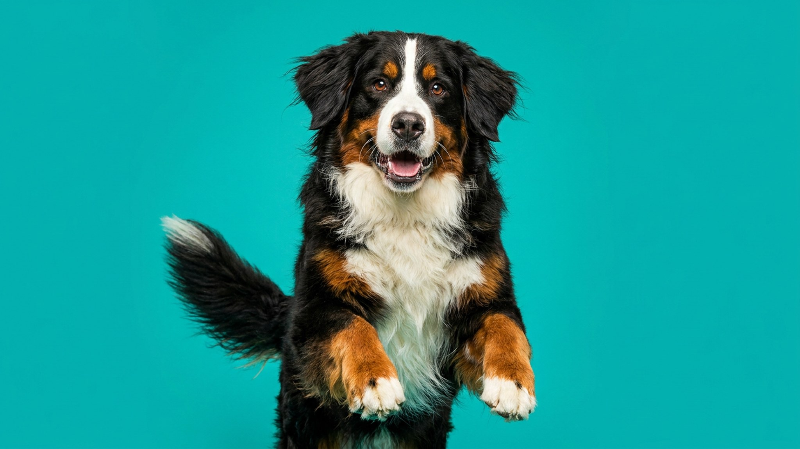

В +30 бернский зенненхунд на прогулке тяжело дышит уже через 10 минут — густая чёрная шерсть поглощает тепло быстрее, чем порода успевает остыть. При этом зенненхунды настолько добродушны, что не подают хозяину сигналов усталости вовремя. Ниже — пять практических правил, которые делают быт с бернцем комфортным и для собаки, и для семьи.
🐾 Дневник здоровья питомца — в кармане
Вес, прививки, симптомы и напоминания в одном приложении. AnimaLife следит за здоровьем питомца вместо вас.
Бернский зенненхунд — горная порода, выведенная для работы в прохладном климате. Летом это означает: прогулки до 9 утра и после 19 вечера, в тени, с водой. В разгар дня собаку лучше оставить дома — в прохладной комнате или рядом с вентилятором.
Бернский зенненхунд растёт медленно: скелет формируется до полутора-двух лет. В этот период суставы уязвимы к чрезмерной нагрузке. Правило: никаких долгих пробежек, прыжков с высоты и интенсивных занятий до 12–18 месяцев.
Хорошая нагрузка для щенка — свободная прогулка на поводке по 20–30 минут, без форсирования темпа. Взрослый зенненхунд (от двух лет) переносит более длительные прогулки и умеренные нагрузки хорошо — но контроль веса остаётся важным: крупная тяжёлая собака несёт дополнительную нагрузку на суставы при лишнем весе. Режим нагрузок и контроль веса для конкретного питомца обсудите с ветеринаром.
Шерсть у бернского зенненхунда длинная, густая, с плотным подшёрстком. Линяет порода заметно — особенно весной и осенью.
Бернский зенненхунд — спокойная, семейная собака. Добродушен с детьми, терпелив и не склонен к агрессии. При этом это крупная собака с сильным телом: ранняя социализация — обязательна, чтобы взрослый пёс умел контролировать себя рядом с маленькими детьми и на людных прогулках.
Начинайте знакомить щенка с городскими звуками, людьми и другими животными с первых месяцев после завершения курса прививок — это закладывает устойчивый, уравновешенный характер на всю жизнь.
🐾 Не уверены, что это опасно?
Опишите симптом в AnimaLife — AI-ветеринар за минуту подскажет, что в пределах нормы, а когда пора к врачу.
🐾 Понравился разбор?
Подпишитесь на канал — каждый день разбираем по одному тревожному симптому у кошек и собак: что в пределах нормы, а когда пора к врачу. Подпишитесь, чтобы не пропустить разбор, который может спасти здоровье вашего питомца.
Материал носит информационный характер и не заменяет очную консультацию ветеринара.